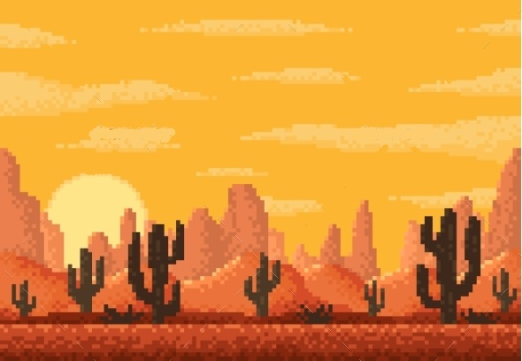

Csapatnév: Randomok
Feladat címe: Vonat menedzselős jaték
Felhasználó Dokumentum html
Gyakorlatvezető::
Mileff Péter
Csoport tagok:
|
Nagy Bence |
FVIQLY |
nbence0620@gmail.com |
|
István Kaló |
T59MGG |
- |
|
Dániel Vitkolczi |
XPGMCH |
vitkolczi.daniel@gmail.com |
|
Bence Varga |
CKFEC9 |
- |
|
Petró Balázs |
FO71M2 |
petro.balazs94@gmail.com |
2022.11.22
Tartalomjegyzék
3.2 Játékok közti keresés(Többjátékosmód/MultiPlayer)
Introduction

Vonatos játékunk célja, hogy menedzsmenttel teljesítsünk küldetéseket adott pályákon.
A felhasználó kedve szerint csinálhat egy vonat vállalkozást.
Overview
Fontos számunkra a játékunk kezelésének érthetősége , mivel ha vevőink által használt termékünk nem egyértelmű , illetve ha gyermekek hamar megunják a játék végigjátszását akkor nem sikerült számunkra teljesítenünk a kiszabott célt a játékkal.
Felhasználói felületünk emiatt is nagy hangsúlyt fejt ki a kisebb korosztály számára könnyen kezelhető vonat irányítására és egyéb menű elemek gyors megértésére. Ezek mellett a nehézségi szintek közti különbségek is segítik a játék könnyebb kezelését azok számára akik nehezebben alkalmazkodnak a kalaúz futamok nehézségeivel.
Egyéb segítő eszközöket is tartalmazz játékunk ami segítségével a felhasználók elakadása esetén a súgó segítség nyújtása alapján folytathatja a játékot.
Overview
Főbb játék elemek elérhetősége
Termékünk egyik nagyobb előnye a hordozhatósága mellett , nem szükséges az internet kapcsolat a játék nem többszemélyes módban való folytatásához, illetve az alap futamok indításához. Ugyanakkor Helyi hálózaton létrehozott szobát is lehet létrehozni , illetve rá csatlakozni.
Helyileg is lementhetőek lesznek az elmentések és a futamok után kapot pontszámok . Ugyanakkor az online többjátékos módban szerzet pontszámokat offline nem fogja a felhasználó látni ,mivel ahhoz internet kapcsolat szükséges.
Korhatár alapján való besorolás
Játékunknak mivel fő célpont közönsége a gyerekek , ezért minnél színesebb ábrák és könnyedebb kezelést biztosítunk termékünk használatához. Emellett az idősebb korhatár csoport javára is nyújtunk kellő mennyiségű szórakozást a pontszámok , és újabb rekordok döntögetésének lehetőségével.
Overview
SinglePlayer
MultiPlayer
User Functions

Hiba jelentése
Játékok közti keresés(Többjátékosmód/MultiPlayer)
Pontszámok megtekintése
Online
Offline

Játék menet során
Amennyiben bármilyen jellegű probléma , bug, glitch , játék megállást tapasztal a játék a játékos számára egy felugró ablak segítségével biztosítjuk a gyors visszajelzés lehetőségét a külön textboxban való hiba részletezésével és a "Send Bug Report" gombbal.
Online fórumunkon

Overview
Overview
Train Tycoon 2022 használatához szükséges gépigény
Train Tycoon 2022 Ajánlott gépigény
A dokumentáció megtalálható:
github.com/Feekyy/Randomok---Szoftech
Havas megálló /Vonatos animáció forrása
Havas megálló 2 /Vonatos animáció 2 forrása
Cseresznye fás megálló /Vonatos animáció 3 forrása